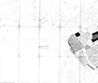
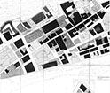
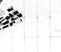

Piano Particolareggiato Contesto 4 - Area Albergheria Ballarò
Piano Particolareggiato Albergheria - Norme Tecniche di attuazzione parte 1
Piano Particolareggiato Albergheria - Norme Tecniche di attuazzione parte 2
Piano Particolareggiato Contesto 4 - Area Albergheria Ballarò - Modalità Intervento Tav. 1a
Piano Particolareggiato Contesto 4 - Area Albergheria Ballarò - Modalità Intervento Tav. 1b
Piano Particolareggiato Contesto 4 - Area Albergheria Ballarò - Modalità Intervento Tav. 1c

Piano Particolareggiato Contesto 4 - Area Albergheria Ballarò - Modalità Intervento Tav. 2a

Piano Particolareggiato Contesto 4 - Area Albergheria Ballarò - Modalità Intervento Tav. 2b

Piano Particolareggiato Contesto 4 - Area Albergheria Ballarò - Modalità Intervento Tav. 3b
Elenco completo Strumenti urbanistici generali